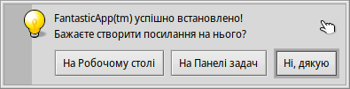
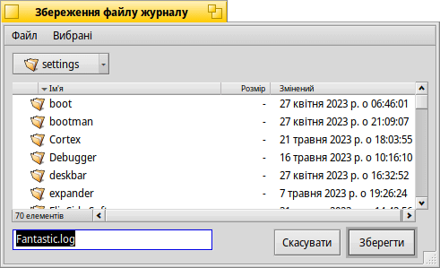
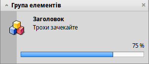
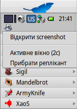

Програми командного рядка характерні для Haiku
Програми командного рядка характерні для Haiku
| Розташування: | /boot/system/bin/ /boot/system/non-packaged/bin/ ~/config/bin/ ~/config/non-packaged/bin/ |
Усі програми командного рядка, які входять до дистрибутиву Haiku, знаходяться у каталозі /boot/system/bin. Ваші власні або додатково встановлені програми командного рядка з'являться там же, або у ~/config/bin, якщо вони встановлюються з пакета .hpkg. В іншому випадку Ви можете помістити їх у /boot/system/non-packaged/bin/ або ~/config/non-packaged/bin/. Усі ці місця є частиною змінної оточення «PATH» і тому будуть знайдені автоматично.
Наведений нижче список не є вичерпним переліком усіх програм CLI характерних для Haiku, він лише показує декілька найкорисніших з них, щоб дати Вам уявлення про їхню роботу. Вам буде корисно самостійно розібратися з тим, що знаходиться у каталозі bin/. Запуск програми з параметром --help показує довідку по використанню команди і всі її різноманітні опції.
 Команди пов'язані з атрибутами: listattr, catattr, addattr, rmattr, copyattr
Команди пов'язані з атрибутами: listattr, catattr, addattr, rmattr, copyattr
Ці команди використовуються для відображення, зчитування, додавання і видалення атрибутів файлів. Пам'ятайте, що ці метадані наразі доступні лише на томах у форматі BFS. Переміщення файлів до інших файлових систем позбавляє файли усіх атрибутів!
Усі ці команди описано у розділі Атрибути у Терміналі.
Команди пов'язані з індексом: lsindex, mkindex, reindex, rmindex
За допомогою цих команд Ви можете обробляти списки, створювати, переіндексувати та видаляти атрибути з індексу BFS. Кожен том має власний індекс, пам'ятайте про це, коли копіюєте файли з одного тому до іншого.
Ці команди описано у розділі Індекс.
Команди управління пакетами: package, pkgman
Для управління пакетами HPKG використовується команда package. Перегляньте статтю Інсталяція програм, щоб дізнатися про основи цього процесу. Зазвичай для автоматичного створення пакетів за так званими «рецептами» використовується інструмент haikuporter.
pkgman призначено для пошуку, інсталяції, оновлення та деінсталяції пакетів. Працює з репозитаріями: репозитарії пакетів можна додавати, прибирати і оновлювати їхні списки. За допомогою параметра full-sync викликається спеціальний тип оновлення: він є більш агресивним, може понижати версію або вилучати пакети, якщо це необхідно.
Щоб отримати докладнішу інформацію про параметр, додайте «--help», наприклад, pkgman search --help.
Команди сценаріїв
Ось декілька інструментів командного рядка, які особливо корисні при написанні сценаріїв (додатково дивіться розділ Bash і Написання сценаріїв).
alert | alert виводить типове вікно попередження з попередньо визначеним значком, пояснювальним текстом і кнопками (до трьох кнопок). Повертає назву натиснутої кнопки і статус виходу (починаючи з 0). Наприклад, така команда виводить таке вікно: alert --idea "FantasticApp(tm) успішно встановлено! \ Бажаєте створити посилання на нього?" "На Робочому столі" "На Панелі задач" "Ні, дякую"  | |
filepanel | filepanel відображає панель відкриття або збереження файлу і дозволяє користувачеві вибрати файл або місце розташування. У якості значення, яке повертає команда, Ви отримаєте шлях до вибраного файлу або папки. Доступно декілька параметрів, наприклад, встановлення початкового каталогу, заголовка вікна, назви файлу за замовчуванням при збереженні або обмеження на дозволені типи файлів. Ось приклад: filepanel -s -t "Збереження файлу журналу" -d ~/config/settings -n Fantastic.log  | |
hey | hey це невеликий допоміжний інструмент, який надсилає «BMessages» програмам і виводить (роздруковує) їхні відповіді. Його можна використовувати для програмних сценаріїв, тобто «дистанційного керування» програмою зі сценарію або командного рядка. Його використання є дещо складним… Запис у Humdinger's blog слугує гарним вступом а завдяки «BeOS Bible» від Scot Hacker's є набагато повніший підручник по роботі з hey від Chris Herborth. | |
notify | notify показує панель сповіщень з повідомленням. У команди існують різні параметри, опис яких можна подивитись виконавши команду notify --help. Сповіщення може бути використано для показу прогресу виконання певної дії. Для цього важливо встановити messageID і завжди використовувати його при оновленні прогресу (число з плаваючою комою від 0.0 до 1.0, яке виводиться у відсотках). Інакше Ви побачите кілька панелей сповіщень, якщо Ви оновите прогрес швидше, ніж встановлений таймаут. notify --type progress --group "Група елементів" --title "Заголовок" --icon /boot/home/bebook.hvif \ --messageID MyMessageID --progress .75 "Трохи зачекайте"  | |
query | query – це версія командного рядка пошукової панелі «Знайти». Насправді, швидкий спосіб створити пошуковий запит – це створити запит на панелі «Знайти», переключитися у режим , додати подвійні лапки (") спереду і ззаду і вставити весь рядок після команди query в Терміналі або Вашому сценарії. | |
waitfor | waitfor – це зручний спосіб дочекатися запуску або завершення певної програми чи потоку. |
Інші команди
checkfs | checkfs – важливий інструмент для перевірки файлової системи на наявність помилок. Просто додайте назву тому, наприклад /Haiku або шлях до пристрою і програма перевірить кожен файл і виправить невідповідності, де це можливо. | |
desklink | За допомогою desklink можна встановити значок для будь-якого файлу, папки, запиту або програми в системному треї панелі задач Deskbar. Також можна створити контекстне меню при натисканні правою кнопкою миші на значку для виконання спеціальних дій. Для прикладу, спробуйте додати програму командного рядка screenshot з різними параметрами (символ «\» у першому рядку слугує лише для переведення рядка у Терміналі): desklink "cmd=Активне вікно (2с):/bin/screenshot --window --border --delay 2" \ "cmd=Прибрати реплікант:desklink --remove=screenshot" /bin/screenshot  | |
diskimage | diskimage дозволяє зареєструвати звичайний файл як дисковий пристрій. Наприклад, Ви можете зареєструвати образ Haiku «anyboot», підключити (змонтувати) його у Tracker і копіювати, редагувати або видаляти файли, перш ніж використовувати його як джерело в Інсталяторі. | |
launch_roster | Демон «launch_daemon» запускає всілякі служби та програми під час загрузки системи. Для деяких з цих служб/програм прописана інструкція на автоматичний перезапуск, якщо вони були завершені. Якщо Вам це не потрібно – наприклад, якщо Ви хочете протестувати модифікований Tracker – Ви можете використовувати launch_roster з параметром stop, щоб відключити перезапуск програми перед завершенням роботи з нею і зупинити програму. Параметр start, навпаки, відновить автоматичний перезапуск і запустить службу/програму а параметр info надасть інформацію про неї. Параметр log виводить (друкує) журнал усіх подій, пов'язаних з «launch_daemon». launch_roster stop x-vnd.be-tskb | |
mountvolume | Багато хто надає перевагу mountvolume для підключення (монтування) локальних розділів і дисків, оскільки вона дуже проста у використанні: просто викличте її, вказавши назву розділу, і все готово. Використовуйте --help для отримання повної довідки по програмі. mount може додатково підключати (монтувати) віддалені диски за допомогою мережевої файлової системи, наприклад, NFS4. Ви вказуєте файлову систему за допомогою параметра -t а віддалене розташування – за допомогою параметра -p. У якості параметра файлової системи Ви можете використовувати будь-що, що знайдете в /system/add-ons/kernel/file_system (і, звісно, у відповідних файлових структурах в ~/config або «non-packaged»). Ви також повинні створити папку як точку монтування. Ось приклад: mkdir -p /DiskStation mount -t nfs4 -p "192.168.178.3:volume1" /DiskStation | |
open | open – дуже зручний маленький інструмент. За допомогою нього Ви відкриваєте будь-який файл у пріоритетній програмі або запускаєте певну програму за її сигнатурою без необхідності знати її точний шлях. Він також працює з URL-адресами і навіть з «віртуальними» каталогами «.» для поточного каталогу та «..» для батьківського, відкриваючи папку в Tracker. | |
ramdisk | RAM-диск схожий на жорсткий диск, який працює лише в оперативній пам'яті комп'ютера. Це робить його дуже швидким, але водночас і нестабільним, оскільки його вміст зникає, коли Ви вимикаєте комп'ютер, або він виходить з ладу, коли у Вас відключається світло. ramdisk create -s 1gb mkfs -q -t bfs /dev/disk/virtual/ram/0/raw RAMses mountvolume RAMses Примітка: Під час створення RAM-диску команда ramdisk виводить шлях до нього. Якщо Ви створите декілька дисків, цей шлях /dev/disk/virtual/ram/0/raw зміниться! Щоб зберегти вміст, принаймні, якщо не станеться якихось непередбачуваних ситуацій, таких як відключення електроенергії тощо, ramdisk можна запустити у режимі читання/запису образу на жорсткому диску. Для цього Вам потрібно створити файл потрібного розміру, який зчитуватиметься щоразу, коли Ви запускатимете ramdisk, і записуватиметься, коли Ви будете відключати (розмонтовувати) RAM-диск. Щоб створити файл образу «RAMimage» розміром 500 MiB і відформатувати його, виконайте такі дії: dd if=/dev/zero of=RAMimage bs=500M count=1 mkfs -q -t bfs /dev/disk/virtual/ram/0/raw RAMimage Відтепер Ви запускаєте ramdisk таким чином: ramdisk create RAMimage mountvolume RAMimage Дуже важливо завжди чисто відключати (розмонтовувати) Ваш RAM-диск, або з Tracker або за допомогою unmount /RAMimage, інакше зміни не будуть записані назад до файлу образу! | |
screenmode | Ця команда встановлює режим екрана (роздільну здатність, бітову глибину, частоту оновлення). Зазвичай це можна зробити у настройках параметрів екрана. Ще один параметр робить її корисною у поєднанні з клавішами швидкого доступу: наприклад, --brightness +3 збільшує яскравість на «3». Корисно для зміни підсвічування за допомогою комбінації клавіш. | |
setvolume | Ця команда встановлює гучність головного виходу системи. Окрім конкретних значень у дБ, Ви можете використовувати такі параметри, як --togglemute, --mute або --unmute та --increase або --decrease для управління гучністю. Для тих параметрів, які використовуються постійно, корисно призначити комбінації клавіш за допомогою панелі налаштувань клавіш швидкого доступу. |